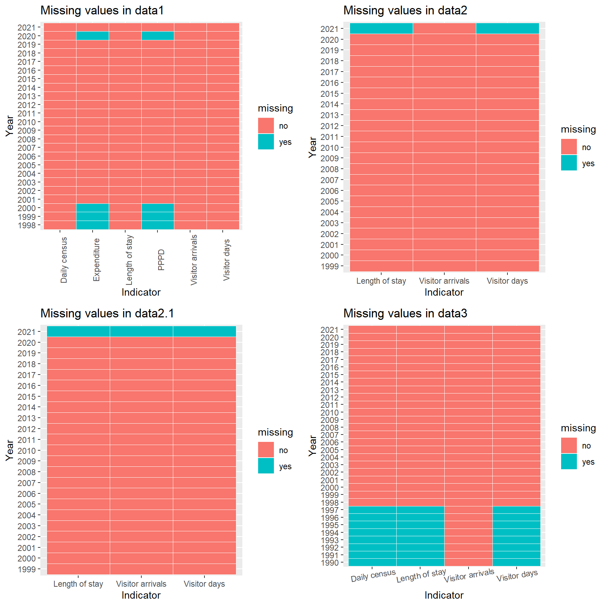
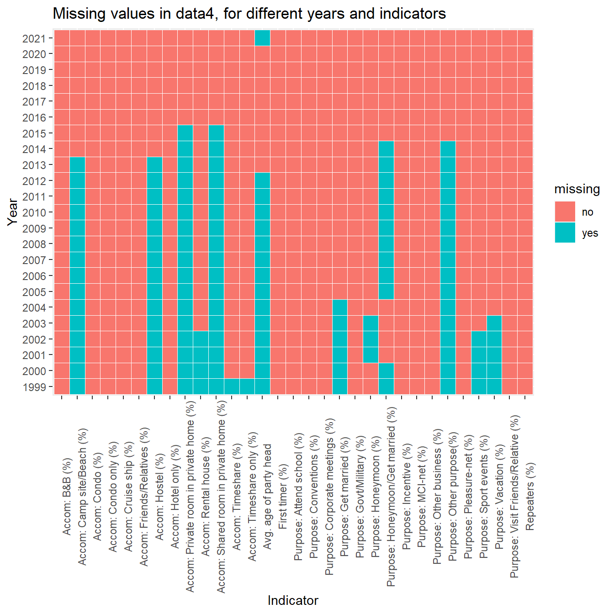

Chapter 4 Missing values
In this chapter, we discuss the pattern of missing values in our datasets. After carefully observing our data, we found out that data1, data2, data2.1, data3 do not have a lot of missing data. Even though they do, the missing pattern is pretty neat. Take data3 as an example, all the data from 1990 to 1997 are missing for indicators except from visitor arrivals. Therefore, we applied a heatmap for each of these datasets to show the missing patterns of the four datasets:

From the plots we can see that data1 is only missing 8 values in Expenditure and PPPD (Per person per day spending) for 4 years. For data2, only average length of stay and visitor days in year 2021 is missing. For data2.1, the three indicators are all missing in 2021. For data3, all the data from 1990 to 1997 are missing for indicators except from visitor arrivals.
The story is pretty different for data4. Intuitively speaking, data4 has a lot of missing data in different indicators and different years. Therefore, we applied 3 different plots to present the pattern of missing values in data4:

From the histogram plot and the heatmap we can see that data for all destinations in 1999 to 2017 are greatly missing. And in the heatmap for missing data in different years and indicators shown below, we can see that the for year 2016 to 2020, no data is missing.

In conclusion, the only years with no missing value at all should be 2018 and 2019. As the data in 2018 is too old, we chose to use the data in 2019 as our observation when analysing the first 2 problems. In problem 3 where we analyse the impact of pandemic on the tourism in Hawaii, we would use data in year 2018 to 2021.